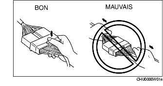
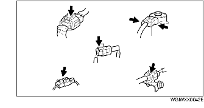
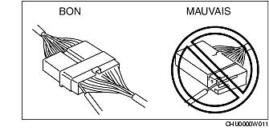

SYSTEME ELECTRIQUE
B3E000000006A01
Connecteurs
Débranchement des connecteurs
-
• Pour débrancher un connecteur, tirez sur les connecteurs, et non sur les fils.

-
• Les connecteurs se débranchent en appuyant ou en tirant sur le levier de verrouillage, comme illustré.

Verrouillage des connecteurs
-
• Pour verrouiller les connecteurs, écouter le clic indiquant qu'ils sont bien verrouillés.

Inspection
-
• Lorsqu'un testeur est utilisé pour contrôler la continuité ou pour mesurer la tension, insérer sa sonde du côté du faisceau.

-
• Contrôler les bornes des connecteurs étanches du côté du connecteur, puisqu'ils ne peuvent être examinés du côté du faisceau.
-
Attention
-
• Pour éviter d'endommager la borne, enrouler un fil fin autour de la sonde du testeur avant de l'insérer dans la borne.